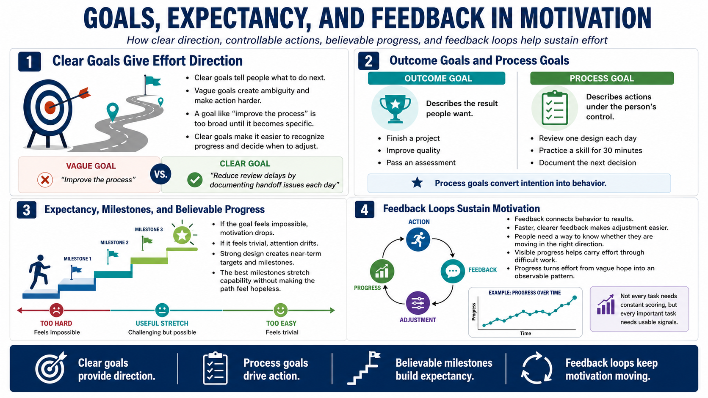

Goals, Expectations, and Progress
Connecting to LMS... Progress: in progress

Narration
Clear goals shape motivation by giving effort a direction. Vague goals often fail because they do not tell people what to do next, how to recognize progress, or when to adjust. A goal like improve the process may sound useful, but it is hard to act on until it becomes specific enough to guide behavior. Clear goals reduce ambiguity and make it easier to choose the next step.
Outcome goals and process goals serve different purposes. An outcome goal describes the result people want, such as finishing a project, improving quality, or passing an assessment. A process goal describes actions under the person's control, such as reviewing one design each day, practicing a skill for a set time, or documenting the next decision. Process goals are powerful because they convert intention into behavior.
Expectancy matters too. People invest more effort when they believe success is possible through action. If the goal feels impossible, motivation drops. If it feels trivial, attention drifts. Useful design creates near-term targets and milestones that stretch capability without making the path feel hopeless. Progress signals help people see that effort is producing movement before the final outcome arrives.
Feedback loops sustain motivation by connecting behavior to results. The faster and clearer the feedback, the easier it is to adjust. This does not mean every task needs constant scoring. It means people need some way to know whether they are moving in the right direction. Visible progress can carry people through difficult work because it turns effort from a vague hope into an observable pattern.